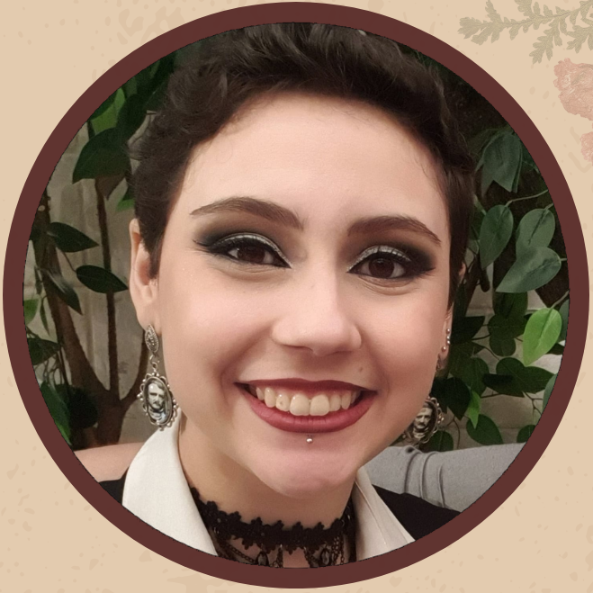

Nicole Pozo
Psicóloga Clínica • CRP 06/161340
Atendimento Online Acessível em Libras A partir de 17 anos
Sobre mim
Psicóloga clínica, formada em 2019, atuo a partir da abordagem psicanalítica. Acredito na importância de um espaço de escuta que respeite a singularidade de cada sujeito, possibilitando a elaboração de conflitos, angústias e processos de autoconhecimento.
Sou fluente em Libras, com experiência em interpretação e no atendimento a pessoas surdas, buscando promover acessibilidade e inclusão no cuidado em saúde mental.
Entendo a clínica como um encontro entre técnica e humanidade: conhecer teorias e métodos é essencial, mas, diante de uma história, trata-se sempre de uma escuta ética, sensível e comprometida.
“Em última instância, é preciso amar para não adoecer.”
— Sigmund Freud